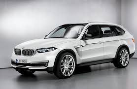
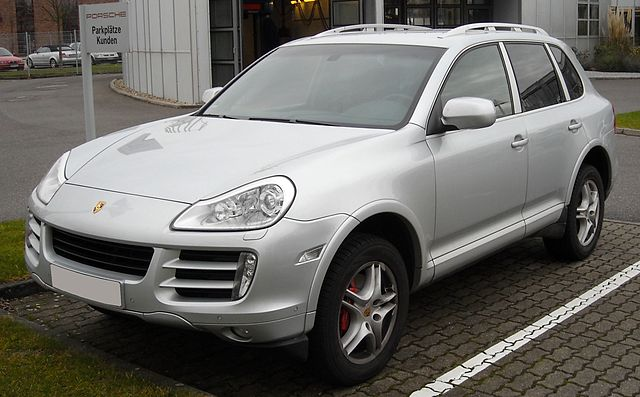

BMW X5 |
|
|---|---|
|
 More images |
BMW X5 — среднеразмерный кроссовер от немецкого автопроизводителя BMW. Автомобиль был представлен в 1999 году на автосалоне в Детройте. Буква «Х» означает, что автомобиль имеет полный привод, а цифра «5» — что базой послужила 5-я серия (BMW E39), однако X5 короче E39, но при этом выше и шире. Кузов Е53 напоминает BMW E46 Touring. Машина приспособлена для езды по всем типам дорожного покрытия, этим она обязана большому клиренсу и постоянному приводу на все колёса. BMW Х5 E53 был разработан в то время, когда BMW Group уже принадлежал бренд Land Rover и как таковой он имеет много общих компонентов и конструкцию с Range Rover L322, в частности систему Hill Descent и Off Road, а также двигатель и электронные системы от BMW E39. В отличие от Range Rover, первый X5 был разработан в качестве спортивного автомобиля, и его внедорожные возможности значительно меньше чем у Land Rover. Машина выпускается на заводе в городе Спартанберг, Южная Каролина (США), как для американского, так и для европейского рынка. В США продажи стартовали в 1999 году, а в Европе в 2000. Вместе с появлением младшего брата (X3) в 2003 году был обновлён и X5. Машина получила новые передние фары и задние фонари, решётку радиатора и слегка изменённый капот и новые двигатели 4.4л (valvetronic от BMW E65/66) и дизельный 3.0 л 218 л.с. В 2006 году производство машины в кузове E53 было прекращено в связи с постановкой на конвейер следующего поколения E70, которое поступило в продажу в США зимой 2006/2007, а в Европе весной 2007 года. |
Porsche Cayenne |
|
|---|---|
|
 More images |
Porsche AG (произносится По́рше; немецкое произношение [ˈpɔʁʃə][2]; полное наименование Dr. Ing. h. c. F. Porsche Aktiengesellschaft) — германский производитель автомобилей, основанный известным конструктором Фердинандом Порше (нем. Ferdinand Porsche) в 1931 году[⇨]. Штаб-квартира и основной завод находится в Штутгарте, Германия. Основным акционером компании является род Порше. Porsche является самой высокодоходной автомобильной компанией в мире (в пересчёте на прибыль от каждой проданной машины). В 2010 году автомобили Porsche были признаны самыми надёжными в мире[3]. В России подразделение Porsche возглавляет доктор Томас Штэрцель[4]. |